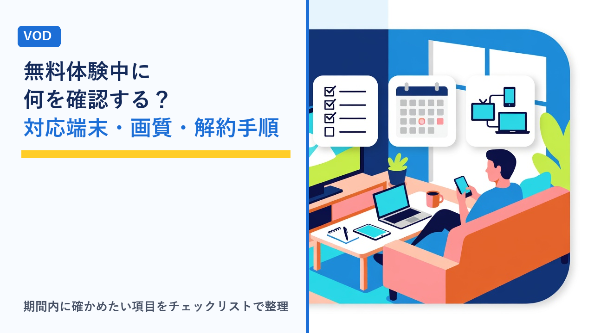

VODの無料体験中にやっておきたいチェックリスト：対応端末・画質・解約手順を期間内に確認する方法
更新日：2026-11-05

動画配信サービス（VOD）の無料体験は、「見たい作品があるか」を確かめるだけで終わってしまいがちです。しかし、実際に契約してから困りやすいのは、自宅のテレビで再生できなかった、家族と同時に見られなかった、画質が思ったより粗かった、解約の場所が分からなかったといった、作品以外の部分です。無料体験は、こうした点を自分の環境で確かめられる期間でもあります。この記事では、無料体験の期間中に確認しておきたい項目をチェックリストの形で整理し、限られた日数の中でいつ何を見るかの目安、解約手順の確かめ方を客観的にまとめます。特定のサービスをすすめるものではなく、確認の手順を整理することが目的です。
無料体験で確かめられるのは「作品」だけではない
無料体験中に確認できることは、大きく4つに分けられます。
- 作品：見たい作品が見放題の対象か、別料金のレンタル・購入扱いか、配信終了の予定がないか。
- 環境：手持ちのテレビ・スマホ・パソコン・ゲーム機で再生できるか、家族と同時に見られるか、画質や通信量は問題ないか。
- 使い勝手：字幕・吹き替えの切り替え、ダウンロード、プロフィール分け、検索のしやすさ、自動再生の設定など。
- お金と手続き：体験終了日と請求が始まる日、本契約後の料金とプラン、解約の手順と解約後に見られる期間。
このうち「作品」は登録前にも公式サイトである程度調べられますが、「環境」「使い勝手」「手続き」は実際に自分のアカウントと端末で試さないと分からない部分です。無料体験の価値はむしろここにあります。
登録した当日にやっておくこと
無料体験は登録した瞬間から日数が進みます。最初の日に次の3点を済ませておくと、あとの確認が落ち着いてできます。
- 体験終了日と課金開始日をメモする：登録完了のメールやアカウント画面に「次回請求日」「無料期間終了日」が書かれています。カレンダーやリマインダーに、終了日の2〜3日前の日付で登録しておきます。サービスによって「終了日の当日まで無料」か「終了日に課金」かの数え方が異なるため、表記をそのまま控えておくのが確実です。
- 登録に使ったアカウント・決済方法を控える：メールアドレス、ログイン方法（メール・SNS連携・キャリア・アプリストア経由）、支払い方法を記録します。解約はこの「登録した経路」で行うことが多く、あとで分からなくなると解約画面にたどり着けない原因になります。
- 解約ページの場所を一度見ておく：解約するかどうかに関係なく、アカウント設定のどこに「解約」「プラン変更」「登録解除」があるかを初日に確認します。実際には押さず、場所を把握するだけで十分です。
解約忘れの具体的な防ぎ方は、VODサービスの解約忘れを防ぐコツと注意点まとめで整理しています。
項目別チェックリスト：何をどう確かめるか
体験中に確認したい項目を、確認の方法と「ここが合わなければ本契約前に考え直す」目安とあわせて整理します。すべてを満たす必要はなく、自分の使い方に関係する行だけ見れば十分です。
| 分類 | 確認項目 | 確認のしかた | 見ておきたいポイント |
|---|---|---|---|
| 端末 | 普段見る端末で再生できるか | テレビ・スマホ・タブレット・パソコン・ゲーム機それぞれでアプリを入れて1本再生する | テレビは機種やOSの世代で非対応のことがある。古いスマホはアプリの対応OSを確認 |
| 端末 | 同時視聴できる台数 | 2台で別の作品を同時に再生してみる | プランによって台数が違う。エラー表示の文言も見ておく |
| 端末 | プロフィールを分けられるか | 家族分のプロフィールを作り、履歴や「視聴中」が分かれるか見る | 子ども用プロフィールやPINの有無も確認 |
| 画質 | 自宅の回線で止まらず再生できるか | 夜の混む時間帯にテレビで見て、読み込みの待ち時間や画質の落ち込みを見る | 画質は回線とプランの両方で決まる。自動画質で粗くなるなら手動設定を試す |
| 画質 | 高画質（フルHD・4K）の条件 | 作品ページの画質表記と、プラン・端末が条件を満たすか確認 | 上位プラン限定や対応端末限定の場合がある |
| 画質 | スマホ回線での通信量 | 画質設定を変えて数分見て、端末の通信量表示で比べる | 通信量の目安はVODの通信量はどれくらい？を参照 |
| 機能 | ダウンロード（オフライン視聴） | 見たい作品をスマホに保存し、機内モードで再生する | 対象作品・保存期限・台数の上限がある |
| 機能 | 字幕・吹き替え・音声の切り替え | 再生中のメニューで切り替えられるか、字幕の大きさを変えられるか見る | 作品ごとに字幕データの有無が違う |
| 機能 | 再生の細かい設定 | 再生速度、スキップ、自動再生のオン・オフ、続きから再生の精度 | テレビアプリでは項目が省かれていることがある |
| 作品 | 見たい作品が見放題か別料金か | 作品ページの「見放題」「レンタル」「購入」の表記を確認 | 違いは見放題とレンタル・購入の違いを参照 |
| 作品 | 配信終了予定 | 作品ページやマイリストに「配信終了日」が出ていないか見る | 体験中に見きれない作品は終了日を優先して並べ替える |
| 手続き | 本契約後の料金・プラン | アカウント画面で体験終了後に適用されるプランと金額を確認 | 体験が上位プランで始まり、終了後もそのまま続く場合がある |
| 手続き | 解約の手順と解約後の扱い | 解約ページの場所、解約後いつまで見られるか、再登録の条件を確認 | 再登録の条件は再登録・再体験のルールを参照 |
テレビでの視聴方法によって確認する手順が変わります。スマートTV・ストリーミング端末・ゲーム機の違いはテレビでVODを見る方法まとめで整理しています。
期間内に確認を終えるためのスケジュール例
無料体験の日数はサービスによって異なり、数日から1か月程度まで幅があります。期間の長さにかかわらず「前半で環境と機能を確かめ、後半は作品を見ながら判断し、終了直前に手続きを決める」という順番にすると、確認漏れが起きにくくなります。
| 時期 | やること | 理由 |
|---|---|---|
| 登録当日 | 終了日のメモ、アカウント情報の記録、解約ページの場所確認 | 日数が経つほど忘れやすい。登録経路の記録は解約時に必要 |
| 最初の2〜3日 | 全端末での再生、同時視聴、プロフィール作成、ダウンロード、字幕切り替え | 環境が合わないと分かれば早めに切り替えを考えられる |
| 中盤 | 見たい作品を実際に見る。夜の時間帯の画質や止まりやすさを見る | 混雑する時間帯の体感は短時間の再生では分からない |
| 終了3日前 | 本契約後の料金・プランを確認し、続けるかどうかを決める | 締め切り当日は時刻の数え方で行き違いが起きやすい |
| 終了2日前まで | やめるなら解約を実行し、解約完了のメールや画面を保存 | 解約後も終了日まで見られるサービスが多く、早めに解約しても損になりにくい |
体験期間が短いサービスでは、「最初の2〜3日」と「中盤」が重なります。その場合は、端末の確認を初日にまとめて済ませ、残りの日は作品の視聴と画質の確認に充てる形にします。
解約手順を「期間内に」確認するときの見方
解約の確認は、実際に解約するときだけでなく、続ける場合でも一度は見ておきたい項目です。解約画面で確認したい点を整理します。
- 解約する場所は登録した経路と同じか：公式サイトから登録した場合はアカウント設定、アプリストア経由ならストアの定期購入管理、携帯キャリアやポイントサービス経由ならそのサービス側の契約画面から行うのが一般的です。アプリをスマホから削除しただけでは解約になりません。
- 解約後にいつまで見られるか：解約した時点で見られなくなるサービスと、期間の終了日まで見られるサービスがあります。前者なら終了日の直前に、後者なら確認が終わった時点で手続きしても損になりません。
- 解約の完了が確認できる表示があるか：「解約手続きが完了しました」の画面やメールを保存しておくと、万一請求があったときに確認できます。解約画面の途中で「引き止め」のページが挟まり、最後まで進まないと完了しない場合があります。
- 無料期間中の解約で体験の扱いがどうなるか：解約しても終了日まで見られる場合と、解約時点で体験が終わる場合があります。ヘルプの「無料期間中に解約した場合」の項目を見ておきます。
- プラン変更と解約の違い：上位プランで体験している場合、本契約を下位プランで続けたいなら「解約」ではなく「プラン変更」になります。変更の反映が次の請求日からかどうかも確認します。
ここまで確認して「場所が分かりにくい」「完了画面がはっきりしない」と感じたら、その印象もサービスを選ぶ材料の一つになります。
「続ける」「やめる」を決めるときの判断材料
チェックリストの結果をもとに、体験の終わりに判断する観点を整理します。
| 観点 | 続ける方向の材料 | 見直す方向の材料 |
|---|---|---|
| 作品 | 見たい作品が見放題に複数あり、今後も見続けたいジャンルが多い | 見たかった作品が別料金、または体験中に見終わってしまった |
| 環境 | 普段使う端末すべてで問題なく再生でき、家族の同時視聴も足りた | テレビで見られない、同時視聴の台数が足りない |
| 使い勝手 | 字幕・ダウンロード・プロフィールなど必要な機能が揃っている | 必要な機能が上位プラン限定、または端末によって使えない |
| お金 | 本契約の料金と見る頻度が釣り合う | 月に数本しか見ないなら、都度レンタルや別サービスのほうが安い可能性 |
複数のサービスを比べる場合、無料体験の有無や期間、再登録の条件は動画配信サービスの無料体験まとめ比較で整理しています。月額を年間で比べる考え方はVODの月額料金を年間で比べるをご覧ください。
選び方のポイント
- 登録前に「自分の使い方」に関係する項目を絞っておく：家族で使うなら同時視聴とプロフィール、通勤で見るならダウンロードと通信量、テレビ中心なら端末対応と画質というように、確認する行を決めてから登録すると、短い体験期間でも漏れにくくなります。
- 体験は「環境の確認」を先に、「作品」はあとに：環境が合わないと分かれば早く切り替えられます。作品は登録前にもある程度調べられます。
- 終了日のメモと解約ページの確認は初日に済ませる：解約忘れの多くは「終了日を覚えていなかった」「解約の場所が分からなかった」が原因です。
- 混雑する時間帯に一度はテレビで見る：短時間の再生テストでは分からない止まりやすさや画質の落ち込みは、実際に見る時間帯で確かめます。
- 本契約後のプランと料金を自分の画面で確認する：体験が上位プランで始まるサービスでは、終了後に意図しないプランで課金が始まることがあります。
- 解約の完了画面やメールを残す：続ける場合でも手順を把握しておくと、あとで見直すときの手間が減ります。
よくある質問
無料体験中に解約すると、すぐに見られなくなりますか？
サービスによって異なります。解約手続きをしても無料期間の終了日までは視聴できるサービスと、解約した時点で視聴できなくなるサービスがあります。前者であれば、確認が終わった時点で早めに解約しても損になりません。後者の場合は、見たい作品を見終えてから終了日の前に手続きする形になります。どちらに当たるかは、ヘルプの「無料期間中に解約した場合」といった項目や、解約画面の案内文で確認できます。解約画面に進んでも最終確認の前なら手続きは完了しないため、案内文を読む目的で画面を開くこと自体は問題ありません。
チェックリストの項目をすべて確認する時間がありません。どれを優先すればいいですか？
優先順位は「お金と手続き」「端末」「作品」の順が目安です。まず終了日のメモと解約ページの場所確認は、どんな使い方でも初日に済ませておきたい項目です。次に、普段いちばん使う端末で1本再生できるかを見ます。ここで再生できなければ、他の項目を確認する意味が薄れます。そのうえで、見たい作品が見放題の対象かを確認し、残りの時間で画質やダウンロードなど自分の使い方に関係する機能を見る、という順番にすると、短い期間でも判断に必要な材料が揃います。
体験を始める前に、公式サイトだけで確認できることはありますか？
無料体験の有無と日数、本契約後の料金とプランの違い、対応端末の一覧、同時視聴の台数、ダウンロード機能の有無、見放題の対象作品の検索は、多くのサービスで登録前に公式サイトやヘルプで確認できます。一方で、自宅のテレビで実際に再生できるか、自宅の回線で夜に止まらず見られるか、字幕の大きさや操作感が自分に合うか、解約画面が分かりやすいかといった点は、アカウントを作って自分の環境で試さないと分かりません。登録前に公式サイトで調べられる項目を済ませておくと、体験期間を環境と使い勝手の確認に集中して使えます。